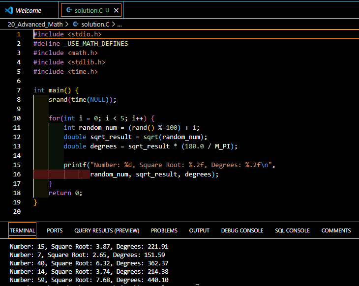

Introduction
Are you ready to unlock the power of advanced mathematics in C programming? Whether you’re developing scientific applications or solving complex computational problems, understanding C’s mathematical capabilities is essential for becoming a proficient programmer. This comprehensive guide will walk you through everything you need to know about implementing advanced math in C.
Essential Math Libraries in C
Before diving into advanced mathematical operations, you’ll need to include the necessary header files in your program:
#include <math.h> // For mathematical functions
#include <stdlib.h> // For random number generation
#include <time.h> // For time-based random seedUnderstanding math.h
The math.h library provides a wide range of mathematical functions for complex calculations. This library is your go-to resource for trigonometric, logarithmic, and exponential operations.
The Role of stdlib.h
While stdlib.h isn’t primarily a math library, it provides essential functions for random number generation and memory management, which are helpful for mathematical applications.
Basic Mathematical Functions
Let’s explore the fundamental mathematical functions that form the building blocks of advanced calculations in C.
Floor and Ceiling Functions
These functions help you round floating-point numbers to integers:
double value = 18.5;
double floor_result = floor(value); // Returns 18.0
double ceil_result = ceil(value); // Returns 19.0Absolute Value Function
The fabs() function returns the absolute value of a floating-point number:
double negative = -25.0;
double absolute = fabs(negative); // Returns 25.0Power and Square Root Operations
For calculations involving powers and square roots:
double power_result = pow(4.0, 3.0); // 4 raised to power 3 (64.0)
double sqrt_result = sqrt(64.0); // Square root of 64 (8.0)Working with Random Numbers
Random number generation is crucial for simulations, games, and statistical applications.
Setting Up Random Number Generation
Here’s how to properly initialize and use random numbers:
#include <time.h>
// Seed the random number generator
srand(time(NULL));
// Generate a random number
int random_number = rand();Generating Numbers Within Ranges
To generate random numbers within a specific range:
// Generate random number between 1 and 100
int random_1_to_100 = (rand() % 100) + 1;Trigonometric Operations
Converting Degrees to Radians
Since C’s trigonometric functions work with radians, here’s how to convert degrees to radians:
double degreesToRadians(double degrees) {
return degrees * (M_PI / 180.0);
}Using Trigonometric Functions
double angle_degrees = 45.0;
double angle_radians = degreesToRadians(angle_degrees);
double sine_value = sin(angle_radians);
double cosine_value = cos(angle_radians);Basic Trigonometric Functions in C
| Function | Description | Example Usage | Common Use Cases |
|---|---|---|---|
sin(x) |
Returns the sine of angle x (in radians) |
double result = sin(0.523); |
• Periodic motion calculations • Wave simulations • Signal processing |
cos(x) |
Returns the cosine of angle x (in radians) |
double result = cos(1.047); |
• Circular motion • Game physics • Coordinate rotations |
tan(x) |
Returns the tangent of angle x (in radians) |
double result = tan(0.785); |
• Slope calculations • Angular measurements • Navigation systems |
Inverse (Arc) Trigonometric Functions
| Function | Description | Example Usage | Return Range |
|---|---|---|---|
asin(x) |
Returns the arc sine (inverse sine) of x |
double angle = asin(0.5); |
[2, π/2] radians |
acos(x) |
Returns the arc cosine (inverse cosine) of x |
double angle = acos(0.5); |
[0, π] radians |
atan(x) |
Returns the arc tangent (inverse tangent) of x |
double angle = atan(1.0); |
[π/2] radians |
Helper Functions for Angle Conversion
// Convert degrees to radians
double degreesToRadians(double degrees) {
return degrees * (M_PI / 180.0);
}
// Convert radians to degrees
double radiansToDegrees(double radians) {
return radians * (180.0 / M_PI);
}Important Notes:
- All trigonometric functions require
#include <math.h>and might require the use of#define _USE_MATH_DEFINES - Input angles must be in radians
- Return values are of type
double - When compiling, use the
-lmflag to link the math library
Logarithmic and Exponential Operations
Natural Logarithm
double value = 10.0;
double natural_log = log(value); // Returns natural logarithm (ln) of valueBase-10 Logarithm
double base10_log = log10(value); // Returns base-10 logarithmBased on the research reports and following the best practices for creating technical documentation tables, I’ll create a comprehensive table for C Logarithmic Functions.
C Logarithmic and Exponential Functions Reference Guide
Core Functions Overview
| Function | Description | Example Usage | Return Value |
|---|---|---|---|
exp(x) |
Returns ( e^x ), where ( e ) is Euler’s number (~2.718) | double result = exp(2.0); |
Returns ( e^2 ) ≈ 7.389 |
log(x) |
Returns natural logarithm (base ( e )) of x | double result = log(5.0); |
Returns ( (5) ) ≈ 1.609 |
log10(x) |
Returns base-10 logarithm of x | double result = log10(1000.0); |
Returns 3.000 |
Common Applications and Use Cases
| Function | Primary Applications | Real-World Examples | Industry Usage |
|---|---|---|---|
exp(x) |
• Growth calculations • Compound interest • Scientific computations |
• Population modeling • Financial calculations • Physical decay processes |
• Finance • Biology • Physics |
log(x) |
• Natural growth analysis • Entropy calculations • Scale transformations |
• Sound intensity (dB) • Information theory • Algorithm complexity |
• Signal processing • Data compression • Algorithm design |
log10(x) |
• Order of magnitude • Scientific notation • Scale measurements |
• pH calculations • Richter scale • Decibel measurements |
• Chemistry • Geology • Audio engineering |
Implementation Guidelines
| Aspect | Requirements | Example Code |
|---|---|---|
| Header Files | #include <math.h> |
#include <math.h> #include <errno.h> |
| Error Checking | Check for domain errors | if (x <= 0) { errno = EDOM; return -HUGE_VAL; } |
| Compilation | Use -lm flag |
gcc program.c -lm |
Limitations and Error Handling
| Issue Type | Description | Prevention/Solution |
|---|---|---|
| Domain Errors | • log(x) and log10(x) require x > 0• Negative inputs cause errors |
Validate input before calculation |
| Overflow | • exp(x) may overflow for large x |
Check result against HUGE_VAL |
| Precision | • Results are double precision | Use appropriate comparison methods |
Best Practices
| Practice | Description | Example |
|---|---|---|
| Input Validation | Always check if input is within valid domain | if (x > 0) { result = log(x); } |
| Error Handling | Check errno after calculations | errno = 0; result = log(x); if (errno != 0) { // Handle error } |
| Performance | Cache frequently used results | static double cached_result; if (need_recalculation) { cached_result = log(x); } |
Important Notes:
- All functions return double precision floating-point values
- Include proper error handling for robust applications
- Consider performance implications in critical sections
- Use appropriate data types for accuracy
- Always validate input values before calculation
Best Practices and Common Pitfalls
To ensure reliable mathematical computations, keep these important points in mind:
- Input Validation: Always validate inputs to mathematical functions to prevent domain errors.
- Type Considerations: Use appropriate data types (
doublefor most calculations) to maintain precision. - Error Handling: Implement proper error checking for mathematical operations that could fail.
- Compiler Flags: Include the
-lmflag when compiling programs that use math functions.
Your Turn!
Let’s put your knowledge to the test with a practical exercise:
Challenge: Create a program that:
- Generates 5 random numbers between 1-100
- Calculates the square root of each number
- Converts the results to degrees (assuming they’re in radians)
// Your solution hereClick here for Solution!
Solution:
#include <stdio.h>
#define _USE_MATH_DEFINES
#include <math.h>
#include <stdlib.h>
#include <time.h>
int main() {
srand(time(NULL));
for(int i = 0; i < 5; i++) {
int random_num = (rand() % 100) + 1;
double sqrt_result = sqrt(random_num);
double degrees = sqrt_result * (180.0 / M_PI);
printf("Number: %d, Square Root: %.2f, Degrees: %.2f\n",
random_num, sqrt_result, degrees);
}
return 0;
}
Quick Takeaways
- Always include
math.hfor mathematical functions andstdlib.hfor random number generation - Use proper type casting and error checking for mathematical operations
- Remember to seed your random number generator with
srand(time(NULL)) - Convert degrees to radians when using trigonometric functions
- Implement proper error handling for mathematical operations
Conclusion
Advanced mathematics in C programming opens up a world of possibilities for creating sophisticated applications. By mastering these fundamental concepts and following best practices, you’ll be well-equipped to handle complex mathematical computations in your C programs.
FAQs
Q: Why do I need to use the -lm flag when compiling? A: The -lm flag links the math library to your program, which is required for using mathematical functions from math.h.
Q: How can I ensure different random numbers each time? A: Use srand(time(NULL)) to seed the random number generator with the current time.
Q: Why do trigonometric functions use radians instead of degrees? A: Radians are the standard unit for angular measurements in mathematics and provide more precise calculations.
References
Happy Coding! 🚀
You can connect with me at any one of the below:
Telegram Channel here: https://t.me/steveondata
LinkedIn Network here: https://www.linkedin.com/in/spsanderson/
Mastadon Social here: https://mstdn.social/@stevensanderson
RStats Network here: https://rstats.me/@spsanderson
GitHub Network here: https://github.com/spsanderson
Bluesky Network here: https://bsky.app/profile/spsanderson.com
My Book: Extending Excel with Python and R here: https://packt.link/oTyZJ